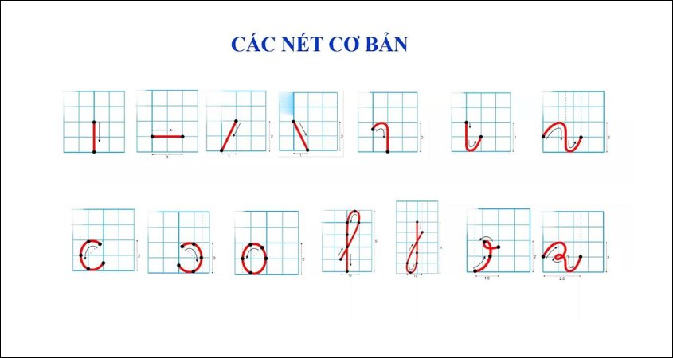

SO SÁNH 14 NÉT CƠ BẢN VỚI ẢNH CHUẨN SGK
Bên trên: Ảnh mẫu gốc của bạn gửi | Bên dưới: Nét vẽ SVG chuẩn toán học (tròn trịa, chuẩn độ cao, độ rộng, không méo nhọn)
ẢNH GỐC BẠN GỬI:

HỆ THỐNG SVG MỚI (14 NÉT HOÀN THIỆN):
11. Nét khuyết trên
12. Nét khuyết dưới